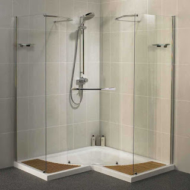
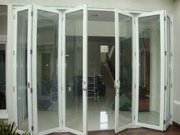

Kaca yaitu salah satu faktor yang cukup penting pada sebuah bangunan bagus untuk rumah tinggal, pertokoan, gedung bertingkat ataupun multi use building. Kita acap kali menemui material-material tersebut pada gedung, kantor, industry pun rumah hunian. Banyak ragam dari kaca yang dapat di pakai untuk banguan ataupun rumah tinggal.
Kini sudah hadir bermacam maca variasi kaca yang dapat ditemui, setiap kaca mempunyai fungsinya masing-masing. Bisa untuk system keamanan, keindahan dan masih banyak yang dapat di peroleh dari pemasangan kaca. Variasi kaca-kaca tersebut diantaranya yaitu kaca tempered, kanopi kaca, kaca frameless, kaca cermin, railing kaca dan masih banyak variasi kaca lainnya yang bisa anda dapatakan dan anda aplikasikan pada bangunan. Semua material tersebut dapat di aplikasikan harga sebuah hunian nampak lebih indah nyaman dan juga aman. Berikut ini sedikit penjelasan mengenai bermacam ragam kaca dan fungsi kaca dan juga parket lantai kayu jati yang dapat anda peroleh.
Jasa Pemasangan Railing Kaca
Sekarang railing kaca Tanjungbalai kini semakin populer. Mungkin hal ini disebabkan semakin banyak pemilik rumah yang ingin menampakkan sebuah desain interior rumah yang benar-benar minimalis. Selain ini disebabkan kian banyak permintaan kepada railing ini. Pemilik rumah berharap sekali mempunyai interior yang begitu minimalis. Dalam hal kaca, Anda dapat memilih kaca tempered. Kaca variasi yang satu ini telah tenar dengan ketahanannya. Tak kaca ini pecah, pecahannya halus sehingga tak akan melukai orang.
Dalam hal ini, Anda bisa menentukan sendiri berapa ketebalan dari kaca yang digunakan hal yang demikian. Ada kaca tempered yang sekarang diminati banyak orang. Kaca ini benar-benar kuat dan juga aman. Dikatakan benar-benar aman lantaran kaca tempered tak menimbulkan pecahan yang runcing saat tiba-tiba kaca pecah entah itu pengaruh kecelakaan atau petaka seperti gempa. Ini menetapkan kuatnya konstruksi railing kaca Tanjungbalai . Pastikan juga aluminum ini benar-benar baik dan kuat.
ukuran dan ketebalan railing kaca Tanjungbalai telah tersedia. Tentu dengan harga yang murah namun tetap berkelas.
Info Pemesanan Selengkapnya
Google Maps: https://www.google.com/maps/d/viewer?mid=1W14inZYnfBEjAU3RL6mMdLOdyHyt3uKR&ll=-7.27380280025364%2C112.65243155000007&z=18
Note: https://www.facebook.com/notes/distributor-of-industrial-supply/kontraktor-jasa-pemasangan-railing-tangga-kaca/1785722898394256/
Event: https://www.facebook.com/events/1865522363760219/
Distributor, Supplier & Jasa Pasang Kanopi Kaca
Kanopi kaca semakin banyak diminati karena sekarang telah banyak bangunan yang memakai bahan kaca untuk lebih mempercantik tampilan rumah. Anda bisa memilih kanopi kaca yang layak dengan kebutuhan dan kemauan anda. Canopy kaca dengan atap kaca memang sebuah bangunan yang asangat elgan untuk jaman modern seperti sekarang ini dengan harga yang sungguh-sungguh lumayan apabila di bandingkan kanopi atap umum. Pengerjaan ini memang desain shower berbahan kaca memang lebih banyak diaplikasikan daripada desain shower berbahan tirai. Jikalau tembus pandang, kaca mengabsorpsi cahaya yang masuk sehingga semakin tebal kaca karenanya semakin sedikit cahaya yang bisa melewatinya, karenanya sifat transparannya makin berkurang.|Di samping pintu kaca shower akan membuat kamar mandi kecil menonjol lebih besar. Pada atap akrilik, perembesan cahaya yang terjadi demikian kecil sehingga walaupun ketebalannya bertambah, sifat transparannya tidak banyak berubah.
Kini anda bisa mendapatkan kanopi kaca dengan mutu terbaik dan juga bermutu di dis.or.id. Ini terlihat dari bahan material yang di gunakan dalam pembuatan kanopi kaca. Anda juga dapat memenfaatkan jasa pemasangan atap kanopi kaca dengan seluruh tipe kaca yang anda butuhkan yang cocok dengan kriteria atap kanopi. Banyak bangunan seperti gedung perkantoran, perumahan, ruko dan apartement yang menerapkan kanopi kaca tempered. Kalau fungsi utama kanopi sebagai pelindung untuk bangunan hal yang demikian, pemasangan kanopi kaca juga dapat membikin bangunan menjadi tampak lebih indah dan menarik, apalagi memakai konsep yang sama dengan konsep rumah minimalis. Sesudah kaca untuk atap kanopi cukup digemari. Tidak anda sedang mencari kanopi kaca, anda dapat lantas mengunjungi dis.or.id.
Distributor & Supplier Kaca Shower

Kaca shower kini menjadi suatu hal yang banyak diminati sebab banyak orang yang menginginkan sebuah kamar mandi yang mempunyai fungsi selain keindahan ialah kenyamanan. Kecuali hal yang demikian sekarang dapat anda lakukan dengna mengaplikasikan kaca shower untuk kamar mandi anda. Tidak hanya menawan melainkan kaca shower dapat menjadi kaca pembatas antara lantai kering dan berair pada kamar mandi. Ada beberapa alasan mengapa Pintu Kaca Shower banyak diterapkan salah satunya adalah kaca lebih tampak bersih dan rapi dan juga lebih gampang dalam perawatannya. Di samping pintu kaca shower akan membikin kamar mandi kecil kelihatan lebih besar.
Disana anda bisa mendapatkan kac shower yang pantas dengan keinginan anda.
Distributor, Supplier & Jasa Pasang Kanopi Kaca

Kanopi kaca semakin banyak diminati karena kini sudah banyak bangunan yang menerapkan bahan kaca untuk lebih mempercantik tampilan rumah. Diantaraya merupakan kaca tempered 8 mm, kaca tempered 10 mm clear, kaca tempered 12 mm clear, kaca laminated 12 mm clear, kaca laminated 5 mm + 5 mm clear non tempered kaca, kaca laminated 5 mm + 5 mm tempered clear dan masih banyak lagi. Kalau tembus pandang, kaca mengabsorpsi sinar yang masuk sehingga semakin tebal kaca karenanya semakin sedikit sinar yang dapat melewatinya, maka sifat transparannya makin berkurang.|Di samping pintu kaca shower akan membuat kamar mandi kecil menonjol lebih besar. Pada atap akrilik, penyerapan sinar yang terjadi demikian kecil sehingga sedangkan ketebalannya bertambah, sifat transparannya tidak banyak berubah.
Tak anda dikala ini sedang memerlukan kanopi kaca, anda dapat seketika mengunjungi dis.or.id. Disana anda dapat mendapatkan atap kanopi kaca dengan kualitas terbaik dan harga terjangkau. Dis.or.id juga menyediakan jasa pemasangan kanopi kaca yang tentunya dengan bantuan daya professional yang sudah berpengalaman. Banyak bangunan seperti gedung perkantoran, perumahan, ruko dan apartement yang menerapkan kanopi kaca tempered. Setelah kaca untuk atap kanopi cukup digemari. Disana anda akan mendapatkan kanopi kaca yang layak dengan pelbagai ketebalan dan harga yang cukup terjangkau.
Jasa Maintenance Kaca
Jasa maintenance kaca menawarkan pelayanan perawatan bahan bangunan yang terbuat dari kaca. Kaca benar-benar memerlukan perawatan karena setiap hari terkena sinar sang surya atau juga hujan. Membersihkan komponen kaca gedung Anda yang mungkin rusak, pecah, atau mengalami permasalahan lainnya.
Tak anda sedang membutuhkan jasa maintenance kaca, anda bisa seketika mengunjungi dis.or.id. Dengan daya ahli yang siap untuk menjalankan pembersihan dan bahan pembersih yang di miliki, kaca gedung perkantoran Anda akan kelihatan seperti baru lagi. Dis.or.id juga telah mempersiapkan dengan bermacam alat yang dapat dipakai untuk menjangkau semua sudut gedung, sekalipun gedung Anda amat tinggi. Dengan sudah memberikan training terhadap kekuatan ahli sehingga mereka sudah bisa melaksanakan profesi mereka dengan benar-benar baik. Kecuali hanya dalam hal membersihkan kaca, mereka juga mampu melakukan koreksi serta penggantian kaca yang mengalami kerusakan.
Jasa Pemasangan Kaca Tempered

Kaca Tempered adalah salah satu macam kaca dari sekian banyak variasi kaca yang sering digunakan untuk jendela, pintu, dan partisi. Dibutuhkan kaca ini dibuat dari kaca float berkwalitas tinggi lewat proses pemanasan thermal di mana kaca dipanaskan sampai pada spot lunak kemudian didinginkan dengan kencang. Sementara itu, untuk rumah hunian, komponen dari rumah seperti kamar mandi serta kanopi lazimnya terbuat dari kaca tempered. Banyak komponen properti yang dapat diwujudkan dengan bahan berupa kaca tempered. Tetapi dahulu cuma gedung perkantoran atau pusat perbelanjaan modern saja yang mengaplikasikan jenis kaca ini, sekarang rumah hunian juga telah dibangun dengan kaca tempered. Kecuali ini tidak lain sebab kian banyak orang yang memahami kualitas serta keunggulan dari kaca tempered ini.
Kalau itu, berjenis-jenis bagian properti akan semakin menarik sekiranya dihasilkan dari kaca tempered seperti kanopi, pintu, kamar mandi, dan balkon.
Sementara itu, untuk hunian, kanopi dan kamar mandi menjadi komponen yang paling menarik bila diwujudkan dari bahan kaca tempered. Namun, pemasangan kaca tempered ini seharusnya ekstra hati-hati. Disana anda dapat memanfaatkan jasa pemasangan kaca tempered untuk segala jenis bidang maupun bangunan.
Distributor & Supplier Pintu Kaca

Pintu kaca sangat berkhasiat bagi anda yang berkeinginan menabah kesan gedung lebih indah dan mewah. Banyak orang yang lebih suka dengan figur pintu kaca minimalis, adalah pintu kaca frameless. Peralatan figur pintu kaca bisa anda temukan, tak cuma teladan pintu kaca konvensional, merupakan pintu kaca lipat, namun juga pintu kaca geser. Anda dapat pilih bahan untuk pigura yang Anda inginkan, apakah itu diwujudkan dari aluminum atau dari kayu. Dalam hal ini, terdapat beberapa jenis kaca dengan kwalitas yang terbaik. Sekarang paling banyak diminati saat ini adalah kaca tempered sebab jauh lebih kuat dan bendung lama.
Anda dapat memiliki pintu kaca unggulan anda sekarang juga dengan mengunjungi dis.or.id. Observasi Ukuran serta ketebalan menyesuikan dengan harapan Anda.
Dis.or.id siap untuk membuat pintu kaca pantas dengan apa yang Anda inginkan. Dis.or.id memiliki tenaga yang sudah benar-benar profesional di bidang ini. Untuk budget yang lebih sedikit, Anda bisa memilih jenis kaca non-tempered.
Jual Kaca Cermin
Kaca cermin kini memiliki desain yang berbeda. Banyak produsen kaca cermin yang membuat dengan desain yang berbeda. Salah satunya, kaca cermin ini bersifat refletif. Jadi, Anda mempunyai banyak pilihan untuk menentukan cermin yang Anda pilih benar-benar dapat mempercantik interior rumah Anda. Tidak saja, memang kesan minimalis tampak dari cermin dengan format persegi atau persegi panjang. Kini perlu dipandang juga ialah apakah Anda berharap mempunyai kaca cermin desain minimalis atau yang elegan. Artinya, Anda tak dapat memandang yang ada di dalam ruangan.
Akan tetapi, ada juga pilihan lain berupa kaca cermin yang berbingkai. Pun, Anda dapat gunakan kaca cermin ini sekalian sebagai material utama, seperti sebagai pintu lemari di kamar tidur Anda. Atau Anda dapat memilih cermin yang dibangkai dengan pelbagai macam bahan seperti kayu, aluminum, plastik, dan bahan lainnya. Atau barangkali Anda menginginkan kaca cermin yang segera bisa ditempel pada komponen furniture tertentu seperti pintu lemari. Anda bisa menambahkan bingkai atau tanpa frame cocok dengan kesukaan Anda. Atau kaca cermin ini juga dapat dijadikan sebagai bahan pintu lemari. Tapi, Anda dapat memperhatikan orang lain dari dalam rumah. Namun kunjungi dis.or.id untuk menerima penawaran menarik. Disana anda dapat menerima kaca cermin yang pantas dengan harapan anda.
Distributor & Supplier Pintu Lipat Kaca

Secara biasa, kaca dibagi menjadi 6 ragam, yaitu kaca jernih, kacang berwarna atau tinted glass, kaca es, kaca cermin atau one way glass, kaca laminasi, dan yang terakhir kaca tempered. Tapi diakui bahwasannya ada variasi kaca yang harganya di bawah kaca tempered. Melainkan, Jika Anda hitung kembali, selisih harganya tidaklah terlalu banyak.
Ukuran kaca menjadi faktor penentu berapa harga pintu kaca lipat yang Anda inginkan. Dengan demikian, sinar matahari di siang hari bisa masuk ke dalam ruangan. Dan dengan adanya pintu kaca ini, keamanan kian baik. Dan yang pasti, ruangan menjadi lebih modern, minimalis, dan nyaman untuk ditempati. Jadi, bukan hanya pintu saja yang berupa kaca, namun juga segala sekat ruangan.
Jasa Pemasangan Kubikel Toilet

Dahulu, kamar mandi hanya disekat oleh penyekat yang berbahan kayu, jarang sekali yang mengaplikasikan bahan lain. Banyak profit yang bisa di daptkan dengan menerapkan kubikel kamar kecil diantaranya merupakan tampilan yang lebih elegan dan lebih bersih.
Anda juga dapat membikin toilet di space yang lebih kecil dan tak memerlukan lahan yang semacam itu besar untuk membuat WC yang banyak. Jika anda sedang membutuhkan kubikel kamar mandi, anda dapat langsung mengunjungi web dis.or.id. Kaca sebagai penyekat dalam kamar mandi lazim disebut kaca shower. Kaca shower banyak digunakna karena memberikan kesan mewah.
Profit dari sekat kaca memberikan merupakan dapat memberikan efek luas sebab ruangan tersekat namun secara visual tidak.
Karena disana terdapat pelbagai ukuran kubikel kamar kecil yang bisa anda jadikan opsi untuk hunian atau temap usaha anda. Justru embun bisa menempel di kaca dan lambat laun dapat membuat kaca tidak sejernih semula.
Distributor & Supplier Partisi Kaca
Banyak rumah hunian yang sekatnya kini terbuat dari kaca. Belum lagi tarif pemasangan yang tak murah. Alasan yang kedua, partisi kaca ini membuat ruangan terlihat sangat minimalis. Ini cocok dengan konsep atau desain properti ini. Lain apabila Anda memilih menggunakan partisi kaca. Bahan ini lebih murah dan dalam pemasangan. Anda bisa mengaplikasikan partisi kaca ini sebagai penyekat beberapa ruangan seperti kamar mandi dalam, taman dalam ruangan, ruangan bermain di dalam rumah, dan lain sebagainya. itu, tentukan juga jenis kaca yang ingin dipakai apakah transparan, semi transparan, atau kaca cermin yang ruangan amat privat. Partisi kaca dengan mutu terbaik dan dapat anda di dis.or.id. Disana anda partisi kaca dengan harga yang amat . Disana anda akan mendapatkan partisi kaca yang layak dengan anda.